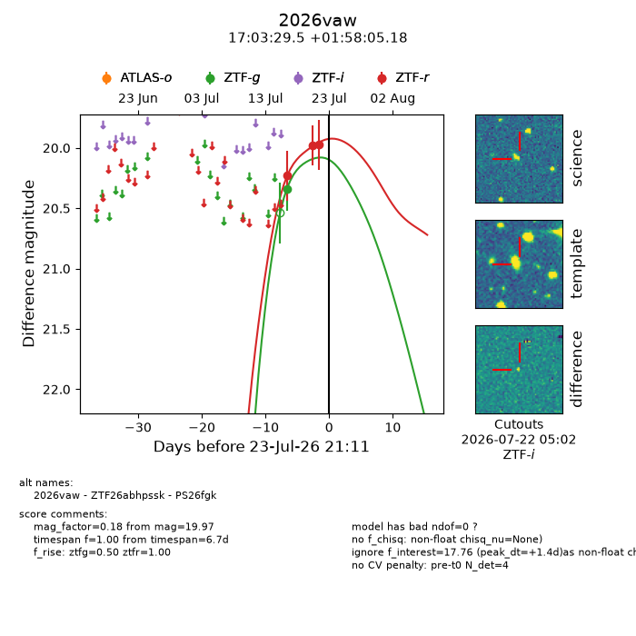
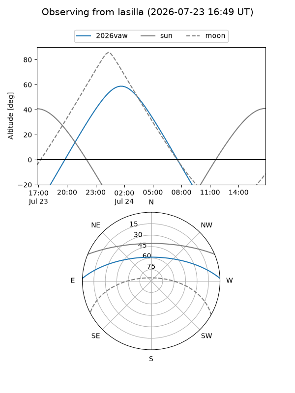
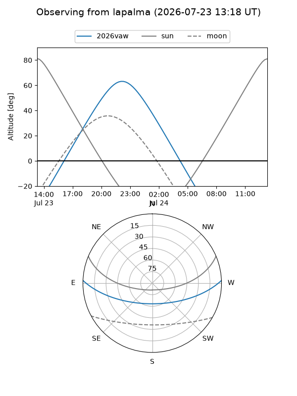
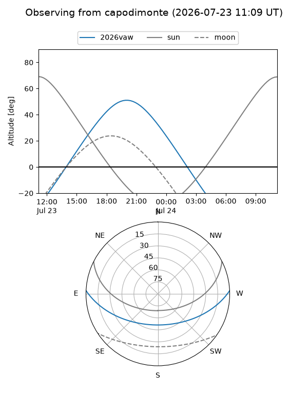
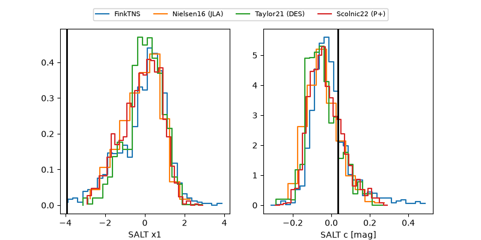

2026vaw
Target 2026vaw at 2026-07-23 21:14
Aliases and brokers:
FINK-ZTF: ztf.fink-portal.org/ZTF26abhpssk
Lasair-ZTF: lasair-ztf.lsst.ac.uk/objects/ZTF26abhpssk
ALeRCE-ZTF: alerce.online/object/ZTF26abhpssk
YSE-PZ: ziggy.ucolick.org/yse/transient_detail/2026vaw
TNS name: wis-tns.org/object/2026vaw
Direct TNS query: direct search
alt names
ZTF26abhpssk (ztf,fink_ztf)
2026vaw (tns,yse)
PS26fgk (panstarrs)
Coordinates:
equatorial (ra, dec) = 255.8728,+1.96810
equatorial (HMS+DMS) = 17:03:29.48,+01:58:05.18
galactic (l, b) = (21.7388,+24.78934)
Flags:
TNS type: nan
peak dt: +1.4
Photometry:
last ztfg=20.34, ztfr=19.97
1 ztfg, 3 ztfr detections
Lightcurve

Visibility



Additional plots
